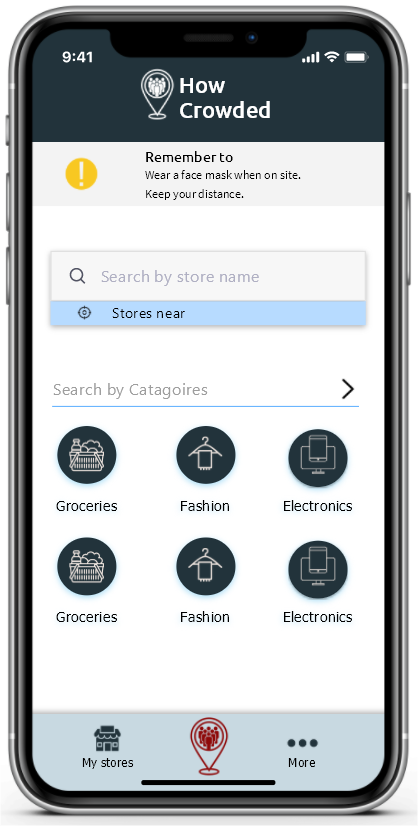
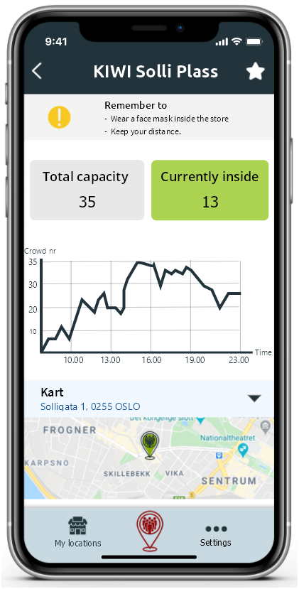

The HowCrowded provides a dual solution for people and organizations to make social distancing a breeze.
Sensors
Sensors are placed at the opening of the locations to register people going in and out.
This provides real-time information about how many people is in the location at a given time. Addtionally, the numbers can be used for forecasting.

Signs at entrance
The service can be used by organization to use a screen sign at the entrance
The screen is bright green when one can enter, and red when the visitor has to wait.

The App Explained
The homepage
When opening the app, you have multiple ways to choose the public place you want
information about.
You could either choose a category, and the app will provide related places, or you could use the search function.
You will also have the possibility to save your favourite places for future use.


Search for a public place
If you already know the name of the place that you want to visit, you can use the search function to find the place. When searching for a place, the app will tell you if there are similar places nearby, making it easier choosing a place less crowded.
Public place information
When you've chosen a specific place, the app will provide the total capacity
of the place, as well as the number of people there in real time.
You will also be able to see a graph of popular times for the place, in order to plan your trip.
The app will also provide additional information, such as the address and opening hours.

Other App Features

Add your favorite store
For quicker access to information, you will be able to save a place, for instance your nearby store, to "My stores". You will get a list over your favourite places with the capacity, gathered in one page.
Privacy, settings and more
The App provides an easy way to change to your preferred settings